[CD] Bài tập về nhà và Kiểm tra
Menu Bài Tập Về Nhà trong khoá học của role CD: soạn bộ câu hỏi cho BTVN của từng bài học và cho từng bài kiểm tra, theo kỳ. Bộ câu hỏi được soạn tay, Import / Export Excel hoặc tạo bằng AI (Generate), kiểm tra bằng Soát lỗi bằng AI. Câu hỏi tạo tại đây là dữ liệu của Thư viện bài tập.
Ảnh lấy từ Figma
CD-KH-060100→CD-KH-060200(BTVN, Kiểm tra) vàCD-KH-030340→CD-KH-030349(Danh sách bài tập, luồng Generate — thiết kế ở Học kỳ / Kiểm tra, dùng chung cho BTVN và Kiểm tra). Điểm khác Figma ghi ngay dưới ảnh; phần chưa có thiết kế ghi rõ là UI cần bổ sung. Câu hỏi, điểm, tên bài trong ảnh là dữ liệu mẫu.
1. UI
Khung màn, cây kỳ và bài
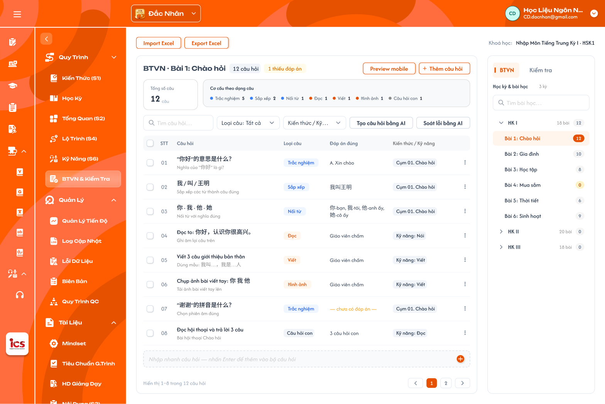
Tab BTVN: cây Học kỳ & bài học bên phải, bộ câu hỏi của bài đang chọn bên trái (Figma CD-KH-060100) — nhấn để xem ảnh gốc

Tab Kiểm tra (Figma CD-KH-060200) — nhấn để xem ảnh gốc

Mô tả:
- CD mở menu
Bài Tập Về Nhàcủa khoá học. Vùng phải là panel chọn bài với 2 tabBTVN/Kiểm tra; vùng trái là bộ câu hỏi của bài đang chọn. Góc trên phải ghiKhoá học: <tên khoá> · <cấp độ>.
Giải thích thành phần:
| Thành phần | Yêu cầu |
|---|---|
Tab BTVN |
Cây theo kỳ: mỗi kỳ (HK I, HK II…) kèm số bài; mở kỳ ra danh sách lesson của kỳ theo thứ tự bài học. Mỗi bài kèm badge số câu hỏi (0 màu vàng). |
Tab Kiểm tra |
Cây theo kỳ giống BTVN: mỗi kỳ mở ra danh sách bài kiểm tra của kỳ (vd Mini test 1 · Chào hỏi, Kiểm tra giữa kỳ), kèm badge số câu. |
Ô Tìm bài học… / Tìm bài kiểm tra… |
Tìm theo tên bài trong tab đang mở; kỳ chứa bài khớp tự mở. |
| Chọn bài | Bấm bài: dòng tô cam, vùng trái tải bộ câu hỏi của bài. Mặc định kỳ đầu tiên, bài đầu tiên. |
Kỳ Vô hiệu |
Vẫn hiện trong cây kèm nhãn Vô hiệu; CD vẫn xem và sửa bộ câu hỏi. |
Điểm cần lưu ý:
- Luồng: chọn kỳ → danh sách lesson (hoặc bài kiểm tra) của kỳ → chọn bài → bộ câu hỏi của bài.
- Kỳ, lesson và bài kiểm tra được định nghĩa ở Khoá học → Học kỳ (Tab Bài học, Tab Kiểm tra); menu Bài Tập Về Nhà chỉ chọn bài để soạn bộ câu hỏi, không thêm / sửa / xoá kỳ, lesson hay bài kiểm tra.
- BTVN và bộ câu hỏi không có trạng thái riêng.
- Kỳ bị
Vô hiệu: BTVN của kỳ đó đã được tạo trong lớp trước khi vô hiệu vẫn dùng bình thường ở lớp (học viên vẫn làm, giáo viên vẫn chấm). - Khác Figma CD-KH-060200: tab Kiểm tra trên Figma là danh sách phẳng; requirement là cây theo kỳ giống BTVN.
Testcase — Khung màn, cây kỳ và bài
| Tên testcase | Priority | Loại test | Scenario | Role | Pre-condition | Given / When / Then | Expected Result |
|---|---|---|---|---|---|---|---|
| Case 1: Mở menu Bài tập về nhà | High | Smoke | Flow 1 / REQ01 | CD | Khoá học có 3 kỳ, HK I có 6 bài | Given mở menu Bài Tập Về Nhà When màn tải xong Then tab BTVN, HK I mở, chọn bài 1, vùng trái là bộ câu hỏi bài 1 |
- Badge số câu đúng từng bài |
| Case 2: Chọn bài khác | High | Flow 1 / REQ01 | CD | Đang ở bài 1 | Given bấm Bài 4: Mua sắm của HK IWhen vùng trái tải Then tiêu đề BTVN · Bài 4: Mua sắm và bộ câu hỏi bài 4 |
- Bài 4 tô cam | |
| Case 3: Tab Kiểm tra theo kỳ | High | REQ01 | CD | HK I có 4 mini test và 2 bài kiểm tra | Given chọn tab Kiểm tra When mở HK I Then hiện 6 bài kiểm tra của HK I |
- Không trộn bài kiểm tra kỳ khác | |
| Case 4: Tìm bài | Medium | REQ01 | CD | HK II có bài Thời tiết |
Given nhập thời tiếtWhen tìm Then HK II tự mở, chỉ còn bài khớp |
- | |
| Case 5: Kỳ Vô hiệu vẫn dùng ở lớp | High | REQ09 | CD | Lớp A đã dùng BTVN bài 2 của HK I; HK I chuyển Vô hiệu |
Given học viên lớp A mở BTVN bài 2 When làm và nộp bài Then vẫn làm và nộp được |
- Cây hiển thị HK I kèm Vô hiệu |
Bộ câu hỏi: thanh công cụ và thẻ tổng quan
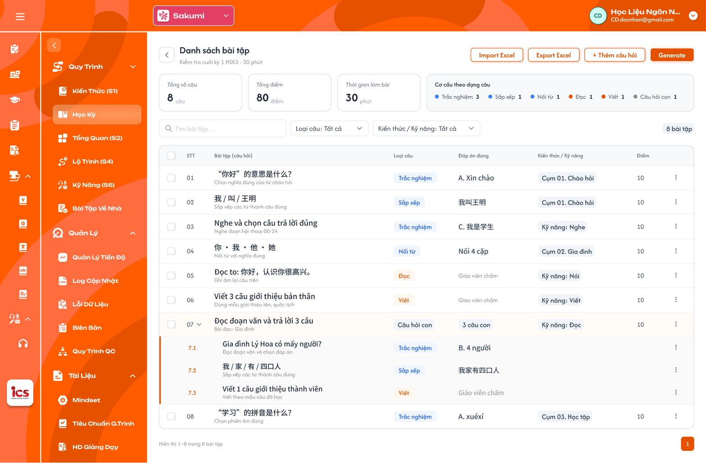
Bộ câu hỏi của bài kiểm tra: nút Import / Export Excel, Thêm câu hỏi, Generate và 4 thẻ tổng quan (Figma CD-KH-030340) — nhấn để xem ảnh gốc

Mô tả:
- Đầu vùng trái là tên bài, các nút thao tác và 4 thẻ tổng quan của bộ câu hỏi. Áp dụng cho cả BTVN và Kiểm tra.
Giải thích thành phần:
| Thành phần | Yêu cầu |
|---|---|
| Tiêu đề | BTVN · <tên bài> hoặc <tên bài kiểm tra>; tag N câu hỏi; tag cảnh báo N thiếu đáp án khi có câu chưa có đáp án (không áp dụng câu Giáo viên chấm). |
Import Excel / Export Excel |
Xem khu vực Import / Export Excel. |
Preview mobile |
Xem bộ câu hỏi như học viên thấy trên app (UI cần bổ sung). |
+ Thêm câu hỏi |
Mở popup Chọn loại câu. |
Tạo câu hỏi bằng AI |
Mở popup Generate bài tập bằng AI. |
Soát lỗi bằng AI |
Xem khu vực Soát lỗi bằng AI. |
Thẻ Tổng số câu |
Số câu cha của bộ (câu hỏi con tính trong câu cha). |
Thẻ Tổng điểm |
Tổng Điểm các câu cha. |
Thẻ Thời gian làm bài |
Chỉ bài kiểm tra: thời gian làm bài (phút) lấy từ cấu hình bài kiểm tra ở Học kỳ. |
Thẻ Cơ cấu theo dạng câu |
Số câu theo từng loại câu có trong bộ (vd Trắc nghiệm 3 · Sắp xếp 1 · Câu hỏi con 1). |
Điểm cần lưu ý:
- Thẻ tổng quan cập nhật ngay sau khi thêm, sửa, xoá, import hoặc tạo câu bằng AI.
- Khác Figma CD-KH-060100 / 060200: màn BTVN và Kiểm tra chưa có nút
Import Excel,Export Excelvà 4 thẻ tổng quan (đã có ở CD-KH-030340); nút tạo bằng AI trên CD-KH-030340 ghiGenerate.
Testcase — Thanh công cụ và thẻ tổng quan
| Tên testcase | Priority | Loại test | Scenario | Role | Pre-condition | Given / When / Then | Expected Result |
|---|---|---|---|---|---|---|---|
| Case 6: Thẻ tổng quan đúng bộ câu | High | REQ02 | CD | Bài kiểm tra có 8 câu (3 Trắc nghiệm, 1 Câu hỏi con 3 câu con…), mỗi câu 10 điểm, thời gian 30 phút | Given chọn bài kiểm tra When xem thẻ Then 8 câu, 80 điểm, 30 phút, cơ cấu đúng từng loại |
- Câu con không cộng thêm vào Tổng số câu | |
| Case 7: Tag thiếu đáp án | Medium | REQ02 | CD | 1 câu Trắc nghiệm chưa có đáp án; 2 câu Viết | Given xem tiêu đề When render Then tag 1 thiếu đáp án |
- Câu Viết không tính thiếu | |
| Case 8: BTVN không có thời gian làm bài | Low | REQ02 | CD | Đang ở tab BTVN | Given xem thẻ tổng quan When render Then không có thẻ Thời gian làm bài |
- |
Bảng câu hỏi
Mô tả:
- Bảng các câu hỏi của bài đang chọn, có tìm kiếm, lọc, chọn nhiều, menu thao tác dòng và ô nhập nhanh cuối bảng.
Giải thích thành phần:
| Thành phần | Yêu cầu |
|---|---|
| Cột | ☐, STT, Câu hỏi (nội dung + hướng dẫn), Loại câu, Đáp án đúng, Kiến thức / Kỹ năng, Điểm, ⋮. |
Đáp án đúng |
Theo loại câu; Đọc, Viết, Hình ảnh hiển thị Giáo viên chấm; chưa có đáp án hiển thị — chưa có đáp án — màu cam; Câu hỏi con hiển thị N câu hỏi con. |
| Câu hỏi con | Dòng cha có mũi tên mở / thu các câu con 7.1, 7.2…; mỗi câu con có loại câu, đáp án và menu ⋮ riêng. Điểm câu cha là điểm của cả câu. |
Tag AI |
Câu tạo bằng AI có tag AI cạnh nội dung; mất khi CD sửa và lưu câu. |
Ô Tìm câu hỏi… |
Theo nội dung và hướng dẫn câu hỏi. |
Lọc Loại câu |
Chọn nhiều trong 8 loại; mặc định Tất cả. |
Lọc Kiến thức / Kỹ năng |
Chọn nhiều cụm kiến thức của khoá hoặc kỹ năng Nghe, Đọc, Viết, Nói; mặc định Tất cả. |
| Checkbox | Chọn nhiều câu để Xoá hàng loạt; checkbox tiêu đề chọn tất cả câu đang hiển thị. |
Menu ⋮ |
Sửa (mở popup soạn câu), Xoá (popup xác nhận). |
| Nhập nhanh cuối bảng | Ô Nhập nhanh câu hỏi — nhấn Enter để thêm vào bộ câu hỏi; Enter mở popup Chọn loại câu với Nội dung câu hỏi điền sẵn chữ vừa nhập. |
| Phân trang | 8 câu/trang; Hiển thị 1–8 trong N câu hỏi; nút trang trước / sau. |
Điểm cần lưu ý:
- Không có lọc
Trạng tháivì câu hỏi và BTVN không có trạng thái. - Câu hỏi thuộc khoá học đang
Công khaikhông được xoá (quy tắc chung: mục Công khai không xoá), vẫn được sửa; muốn ngừng dùng cả khoá thì chuyển khoá sangVô hiệu. - Xoá câu là xoá mềm; số thứ tự các câu sau dồn lên.
- Khác Figma CD-KH-060100 / 060200: bảng chưa có cột
Kiến thức / Kỹ năng, lọcKiến thức / Kỹ năng(đã có ở CD-KH-030340) và còn lọcTrạng thái.
Testcase — Bảng câu hỏi
| Tên testcase | Priority | Loại test | Scenario | Role | Pre-condition | Given / When / Then | Expected Result |
|---|---|---|---|---|---|---|---|
| Case 9: Bảng đủ cột | High | Smoke | Flow 1 / REQ03 | CD | Bài có câu Trắc nghiệm, Viết, Câu hỏi con | Given chọn bài When bảng tải Then đủ cột; Viết hiện Giáo viên chấm; Câu hỏi con hiện N câu hỏi con |
- Không có lọc Trạng thái |
| Case 10: Lọc kết hợp | Medium | REQ03 | CD | Bài có câu Trắc nghiệm gắn Cụm 01 và Kỹ năng Nghe | Given lọc Loại câu Trắc nghiệm và Kiến thức / Kỹ năng Kỹ năng: NgheWhen áp dụng Then chỉ còn câu Trắc nghiệm gắn Nghe |
- Thẻ tổng quan vẫn tính cả bộ | |
| Case 11: Xoá câu | High | Flow 4 / REQ03 | CD | Bài thuộc khoá Nháp |
Given chọn ⋮ → Xoá câu 03When xác nhận Then câu 03 biến mất, các câu sau dồn số |
- Toast Thành Công- Thẻ tổng quan cập nhật |
|
| Case 12: Không xoá câu của khoá Công khai | High | EX05 / REQ03 | CD | Bài thuộc khoá Công khai |
Given mở ⋮ hoặc gửi request xoáWhen hệ thống xử lý Then không có Xoá; backend từ chối |
- Vẫn sửa được câu | |
| Case 13: Nhập nhanh | Medium | Flow 2 / REQ03 | CD | Đang ở bộ câu hỏi | Given nhập 你叫什么名字？ vào ô nhập nhanhWhen nhấn Enter Then mở popup Chọn loại câu, nội dung điền sẵn |
- Chưa lưu câu đến khi bấm Lưu câu hỏi |
Bài chưa có câu hỏi
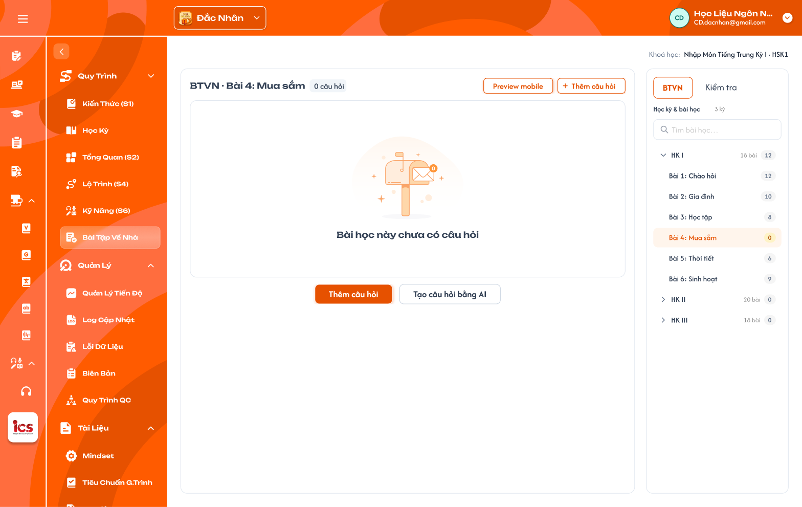
Bài chưa có câu hỏi (Figma CD-KH-060130) — nhấn để xem ảnh gốc

Mô tả:
- Bài chưa có câu nào: vùng trái hiển thị trạng thái rỗng
Bài học này chưa có câu hỏivà 2 nútThêm câu hỏi,Tạo câu hỏi bằng AI.
Giải thích thành phần:
| Thành phần | Yêu cầu |
|---|---|
| Tiêu đề | BTVN · <tên bài> và tag 0 câu hỏi. |
Thêm câu hỏi |
Mở popup Chọn loại câu. |
Tạo câu hỏi bằng AI |
Mở popup Generate. |
Import Excel |
Vẫn dùng được khi bài chưa có câu. |
Điểm cần lưu ý:
- Badge số câu của bài trong cây là
0màu vàng.
Testcase — Bài chưa có câu hỏi
| Tên testcase | Priority | Loại test | Scenario | Role | Pre-condition | Given / When / Then | Expected Result |
|---|---|---|---|---|---|---|---|
| Case 14: Trạng thái rỗng | Medium | REQ03 | CD | Bài 4 chưa có câu | Given chọn bài 4 When vùng trái tải Then hiện Bài học này chưa có câu hỏi và 2 nút |
- Không có bảng rỗng giả |
Popup Chọn loại câu
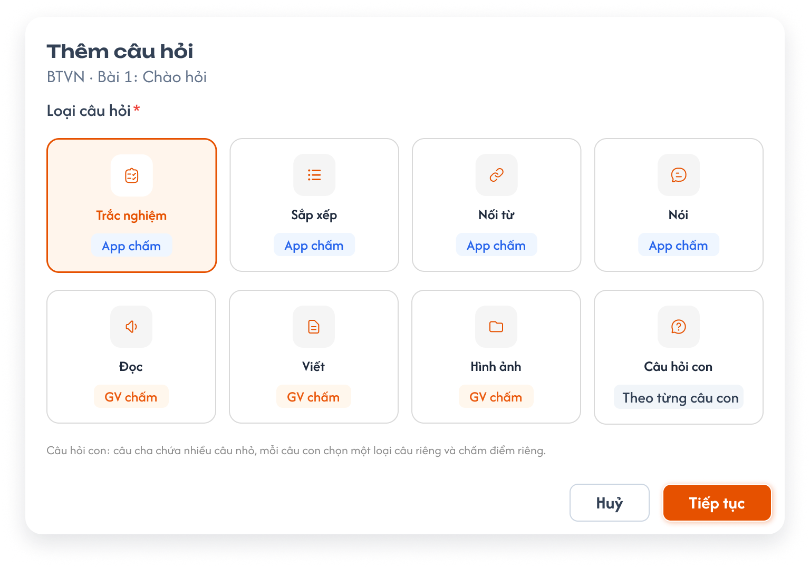
Popup Thêm câu hỏi — chọn loại câu (Figma CD-KH-060110) — nhấn để xem ảnh gốc

Mô tả:
- Bước đầu khi thêm câu: chọn một trong 8 loại câu rồi
Tiếp tụcsang popup soạn câu.
Giải thích thành phần:
| Loại câu | Người chấm | Mã loại câu (source ICS cũ) |
|---|---|---|
Trắc nghiệm |
App chấm | 1 (từ vựng), 5 (câu), 11 (hình ảnh) |
Sắp xếp |
App chấm | 7 |
Nối từ |
App chấm | 8 |
Nói |
App chấm | 22 |
Đọc |
GV chấm | 3, 10 |
Viết |
GV chấm | 4, 44, 6 |
Hình ảnh |
GV chấm | 2 |
Câu hỏi con |
Theo từng câu con | Câu có danh sách câu con |
Điểm cần lưu ý:
- Mặc định chọn sẵn
Trắc nghiệm;Huỷđóng popup không lưu. - Ghi chú dưới lưới:
Câu hỏi con: câu cha chứa nhiều câu nhỏ, mỗi câu con chọn một loại câu riêng và chấm điểm riêng.
Testcase — Popup Chọn loại câu
| Tên testcase | Priority | Loại test | Scenario | Role | Pre-condition | Given / When / Then | Expected Result |
|---|---|---|---|---|---|---|---|
| Case 15: Chọn loại và tiếp tục | High | Smoke | Flow 2 / REQ04 | CD | Bộ câu hỏi đang mở | Given bấm + Thêm câu hỏi, chọn Sắp xếpWhen bấm Tiếp tụcThen mở popup Soạn câu hỏi · Sắp xếp |
- Loại câu khoá trong popup soạn |
| Case 16: Đủ 8 loại và người chấm | Medium | REQ04 | CD | Popup đang mở | Given xem lưới When render Then đủ 8 loại, nhãn App chấm / GV chấm / Theo từng câu con đúng |
- |
Popup Soạn câu hỏi
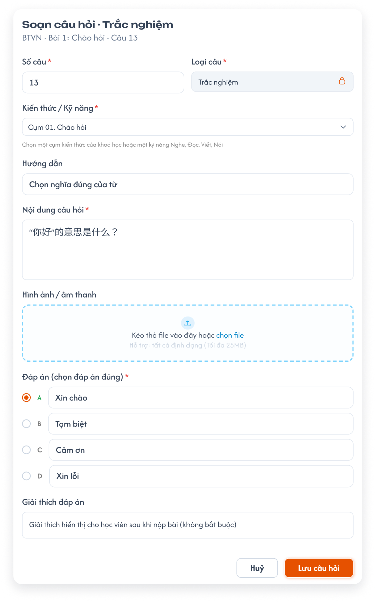
Popup Soạn câu hỏi · Trắc nghiệm (Figma CD-KH-060120) — nhấn để xem ảnh gốc

Mô tả:
- Soạn hoặc sửa một câu hỏi. Phần đầu chung cho mọi loại; phần đáp án đổi theo loại câu.
Giải thích thành phần:
| Field | Yêu cầu |
|---|---|
| Tiêu đề | Soạn câu hỏi · <loại câu>; dòng phụ BTVN · <tên bài> · Câu <số câu> hoặc <tên bài kiểm tra> · Câu <số câu>. |
Số câu * |
Bắt buộc; số thứ tự câu trong bộ, số nguyên ≥ 1. Thêm mới mặc định là câu tiếp theo cuối bộ; nhập số đã có thì chèn vào vị trí đó, các câu sau dồn xuống. |
Loại câu * |
Bắt buộc; lấy từ popup Chọn loại câu, khoá không sửa (icon khoá). Muốn đổi loại thì tạo câu mới. |
Kiến thức / Kỹ năng * |
Bắt buộc; chọn một cụm kiến thức của khoá học (vd Cụm 01. Chào hỏi) hoặc một kỹ năng Nghe, Đọc, Viết, Nói. |
Điểm * |
Bắt buộc; số > 0, mặc định 10. |
Hướng dẫn |
Không bắt buộc; lời dặn hiển thị trên câu (vd Chọn nghĩa đúng của từ). |
Nội dung câu hỏi * |
Bắt buộc; nhiều dòng. |
Hình ảnh / âm thanh |
Không bắt buộc; kéo thả hoặc chọn file, mỗi file tối đa 25MB. |
| Đáp án * | Theo loại câu (bảng dưới). |
Giải thích đáp án |
Không bắt buộc; hiển thị cho học viên sau khi nộp bài. |
Huỷ / Lưu câu hỏi |
Huỷ đóng, không lưu. Lưu câu hỏi kiểm tra field bắt buộc, lưu và đóng popup. |
| Loại câu | Phần đáp án |
|---|---|
Trắc nghiệm |
4 lựa chọn A–D, chọn đúng một đáp án đúng. |
Sắp xếp |
Các mảnh theo thứ tự đúng; app xáo trộn khi hiển thị (UI cần bổ sung). |
Nối từ |
Danh sách cặp cột trái – cột phải (UI cần bổ sung). |
Nói |
Câu mẫu để app nhận diện giọng nói (UI cần bổ sung). |
Đọc, Viết, Hình ảnh |
Không có đáp án; giáo viên chấm. Có thể nhập bài mẫu tham khảo (UI cần bổ sung). |
Câu hỏi con |
Danh sách câu con; mỗi câu con chọn loại câu riêng và soạn như câu thường, không có Số câu riêng (đánh N.1, N.2…) (UI cần bổ sung). |
Điểm cần lưu ý:
- Thiếu field bắt buộc: báo lỗi đỏ dưới field, chặn lưu.
- Câu thiếu đáp án vẫn được lưu nhưng tính vào tag
N thiếu đáp án(trừ loại GV chấm). - Sửa câu có tag
AIrồi lưu thì tagAImất. - Khác Figma CD-KH-060120: popup chưa có field
Số câuvàKiến thức / Kỹ năng; Figma mới có phần đáp án của Trắc nghiệm.
Testcase — Popup Soạn câu hỏi
| Tên testcase | Priority | Loại test | Scenario | Role | Pre-condition | Given / When / Then | Expected Result |
|---|---|---|---|---|---|---|---|
| Case 17: Thêm câu Trắc nghiệm | High | Smoke | Flow 2 / REQ05 | CD | Bộ có 12 câu | Given soạn câu Trắc nghiệm đủ field, gắn Cụm 01. Chào hỏiWhen bấm Lưu câu hỏiThen câu 13 thêm cuối bảng |
- Toast Thành Công- Thẻ tổng quan cập nhật |
| Case 18: Thiếu Kiến thức / Kỹ năng | High | EX01 / REQ05 | CD | Popup đang mở | Given bỏ trống Kiến thức / Kỹ năng When bấm Lưu câu hỏiThen báo lỗi dưới field, không lưu |
- Tương tự khi thiếu Số câu, Điểm, Nội dung | |
| Case 19: Chèn theo Số câu | Medium | REQ05 | CD | Bộ có 12 câu | Given soạn câu mới với Số câu 3When lưu Then câu mới là câu 3, câu 3–12 cũ thành 4–13 |
- | |
| Case 20: Sửa câu AI | Medium | REQ05 / REQ08 | CD | Câu 09 có tag AI |
Given ⋮ → Sửa câu 09, đổi Hướng dẫnWhen lưu Then câu cập nhật, mất tag AI |
- | |
| Case 21: File quá 25MB | Medium | EX02 / REQ05 | CD | File âm thanh 30MB | Given chọn file When tải lên Then không thêm file, báo File vượt quá dung lượng cho phép (25MB). |
- |
Import / Export Excel
Mô tả:
Export Exceltải bộ câu hỏi của bài đang chọn ra file.xlsx;Import Excelthêm câu hỏi từ file.xlsxvào cuối bộ câu hỏi của bài đang chọn (UI popup kết quả cần bổ sung).
Giải thích thành phần:
| Thành phần | Yêu cầu |
|---|---|
| Cột file | Giống cột bảng câu hỏi trên UI: STT, Câu hỏi, Hướng dẫn, Loại câu, Đáp án đúng, Kiến thức / Kỹ năng, Điểm. Câu hỏi con nằm ở các dòng ngay dưới câu cha, STT dạng 7.1, 7.2. |
| Export | Xuất toàn bộ câu của bài (không theo bộ lọc đang chọn); tên file <Khoá học>_<Bài>.xlsx. |
| Import — dòng bắt buộc | Mỗi dòng phải có STT, Câu hỏi, Loại câu (một trong 8 loại), Kiến thức / Kỹ năng (cụm của khoá hoặc Nghe, Đọc, Viết, Nói), Điểm. |
| Import — lỗi dữ liệu | Có dòng thiếu field bắt buộc hoặc sai giá trị → chặn cả file, không thêm câu nào, hiển thị danh sách lỗi theo số dòng (vd Dòng 5: thiếu Loại câu). |
| Import — câu trùng | Không tự dò hay bỏ câu trùng; mọi dòng hợp lệ đều được thêm. Câu trùng do Soát lỗi bằng AI phát hiện. |
| Import — thành công | Thêm vào cuối bộ theo thứ tự STT trong file; Toast Thành Công Đã import N câu hỏi.; gợi ý chạy Soát lỗi bằng AI. |
Điểm cần lưu ý:
- File export dùng lại được để import (cùng cấu trúc cột).
- Chỉ nhận
.xlsx; file khác hoặc sai cột tiêu đề → báo lỗi, không import. - Khác Figma: nút Import / Export mới có ở CD-KH-030340; chưa có popup kết quả import.
Testcase — Import / Export Excel
| Tên testcase | Priority | Loại test | Scenario | Role | Pre-condition | Given / When / Then | Expected Result |
|---|---|---|---|---|---|---|---|
| Case 22: Export đúng cột | High | Smoke | Flow 5 / REQ06 | CD | Bài có 8 câu, 1 câu hỏi con 3 câu con | Given đang lọc Loại câu ViếtWhen bấm Export ExcelThen file có đủ 8 câu và 3 dòng 7.1–7.3, cột như bảng UI |
- Không phụ thuộc bộ lọc |
| Case 23: Import thành công | High | Smoke | Flow 5 / REQ06 | CD | File 10 dòng hợp lệ | Given bấm Import Excel, chọn fileWhen hệ thống xử lý Then thêm 10 câu vào cuối bộ |
- Toast Đã import 10 câu hỏi. |
| Case 24: Chặn cả file khi có dòng lỗi | High | EX03 / REQ06 | CD | File 10 dòng, dòng 5 thiếu Loại câu | Given import file When kiểm tra Then không thêm câu nào, báo Dòng 5: thiếu Loại câu |
- Bộ câu hỏi giữ nguyên | |
| Case 25: Không tự bỏ câu trùng | Medium | REQ06 / REQ07 | CD | File có 2 dòng trùng câu đã có | Given import file When thành công Then cả 2 dòng được thêm |
- Soát lỗi bằng AI báo 2 câu trùng | |
| Case 26: Export rồi import lại | Medium | REQ06 | CD | Bài A có 8 câu | Given export bài A, import file vào bài B trống When thành công Then bài B có 8 câu giống bài A |
- |
Soát lỗi bằng AI
Mô tả:
- Nút
Soát lỗi bằng AIcho AI rà toàn bộ câu của bài đang chọn và trả danh sách vấn đề để CD tự xử lý (UI cần bổ sung).
Giải thích thành phần:
| Thành phần | Yêu cầu |
|---|---|
| Phạm vi | Toàn bộ câu của bài đang chọn, kể cả câu hỏi con. |
| Vấn đề phát hiện | Câu trùng (cùng loại câu, nội dung giống hoặc gần giống), thiếu đáp án, đáp án không khớp nội dung, lỗi chính tả / phiên âm, câu không khớp Kiến thức / Kỹ năng đã gắn. |
| Kết quả | Danh sách vấn đề theo số câu, bấm một vấn đề cuộn tới câu tương ứng. Không có vấn đề thì báo Không tìm thấy lỗi. |
| Xử lý | AI không tự sửa hay xoá; CD sửa hoặc xoá câu bằng menu ⋮. |
Điểm cần lưu ý:
- Soát lỗi chỉ đọc dữ liệu, không thay đổi bộ câu hỏi.
Testcase — Soát lỗi bằng AI
| Tên testcase | Priority | Loại test | Scenario | Role | Pre-condition | Given / When / Then | Expected Result |
|---|---|---|---|---|---|---|---|
| Case 27: Phát hiện câu trùng | High | Flow 7 / REQ07 | CD | Câu 02 và câu 11 cùng nội dung, cùng loại | Given bấm Soát lỗi bằng AIWhen AI trả kết quả Then danh sách có vấn đề trùng giữa câu 02 và 11 |
- Không tự xoá câu nào | |
| Case 28: Không có lỗi | Low | REQ07 | CD | Bộ câu hỏi đúng | Given soát lỗi When AI trả kết quả Then hiện Không tìm thấy lỗi. |
- |
Generate bài tập bằng AI — Popup nhập yêu cầu
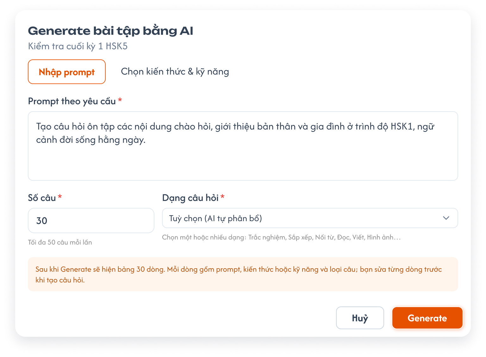
Popup Generate bài tập bằng AI, tab Nhập prompt (Figma CD-KH-030341) — nhấn để xem ảnh gốc

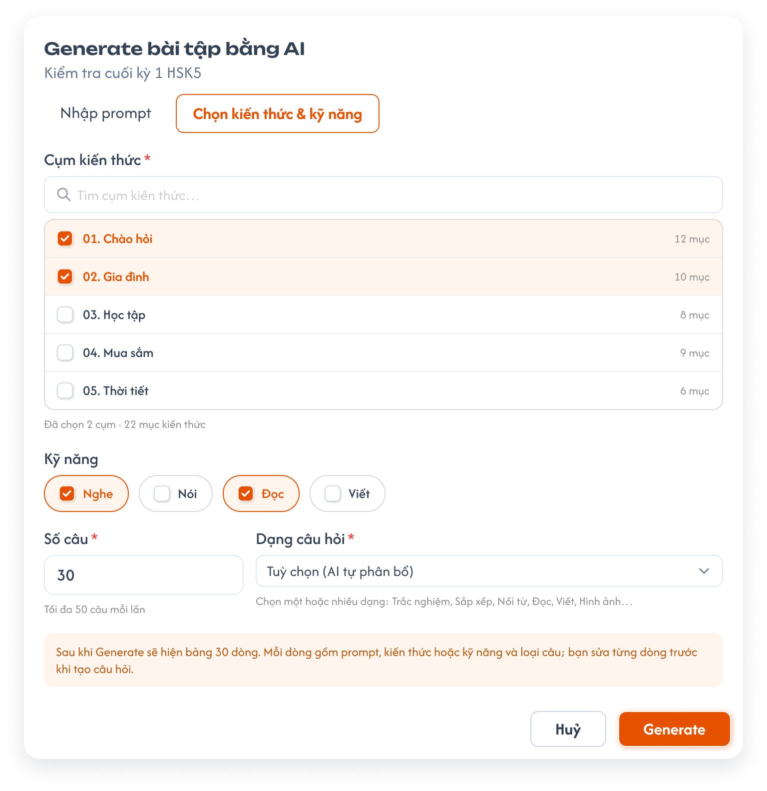
Popup Generate, tab Chọn kiến thức & kỹ năng (Figma CD-KH-030342) — nhấn để xem ảnh gốc

Mô tả:
- Bấm
Tạo câu hỏi bằng AImở popupGenerate bài tập bằng AI(dòng phụ là tên bài). AI không tạo câu hỏi ngay mà sinh một bảng N dòng để CD soát, sửa rồi chọn dòng muốn tạo.
Giải thích thành phần:
| Field | Yêu cầu |
|---|---|
Tab Nhập prompt |
Prompt theo yêu cầu * (nhiều dòng). |
Tab Chọn kiến thức & kỹ năng |
Cụm kiến thức * (tìm cụm, tick ít nhất 1 cụm; mỗi cụm kèm số mục; dòng Đã chọn N cụm · M mục kiến thức); Kỹ năng (tick 0 hoặc nhiều trong Nghe, Nói, Đọc, Viết). |
Số câu * |
Bắt buộc, số nguyên ≥ 1; không giới hạn số câu mỗi lần. |
Dạng câu hỏi * |
Tuỳ chọn (AI tự phân bổ) hoặc chọn một / nhiều trong 8 loại câu. |
| Ghi chú | Sau khi Generate sẽ hiện bảng N dòng. Mỗi dòng gồm prompt, kiến thức hoặc kỹ năng và loại câu; bạn sửa từng dòng trước khi tạo câu hỏi. |
Huỷ / Generate |
Generate chỉ bật khi tab đang dùng đủ field bắt buộc. |
Điểm cần lưu ý:
- Chuyển tab giữ nguyên
Số câuvàDạng câu hỏi; chế độ Generate theo tab đang mở khi bấmGenerate. - Khác Figma CD-KH-030341 / 030342: dòng phụ dưới
Số câughiTối đa 50 câu mỗi lần; requirement không giới hạn.
Testcase — Popup nhập yêu cầu Generate
| Tên testcase | Priority | Loại test | Scenario | Role | Pre-condition | Given / When / Then | Expected Result |
|---|---|---|---|---|---|---|---|
| Case 29: Generate theo prompt | High | Smoke | Flow 6 / REQ08 | CD | Bài kiểm tra đang mở | Given nhập prompt, Số câu 30, Dạng Tuỳ chọnWhen bấm GenerateThen mở trạng thái Đang tạo bảng |
- |
| Case 30: Chọn cụm bắt buộc | High | EX06 / REQ08 | CD | Tab Chọn kiến thức & kỹ năng, chưa tick cụm | Given chỉ tick kỹ năng Nghe When xem nút GenerateThen nút khoá |
- Tick 1 cụm thì nút mở | |
| Case 31: Không giới hạn số câu | Medium | REQ08 | CD | Popup đang mở | Given nhập Số câu 80When bấm GenerateThen hệ thống chấp nhận, sinh bảng 80 dòng |
- Không báo vượt giới hạn |
Generate — Đang tạo bảng và lỗi
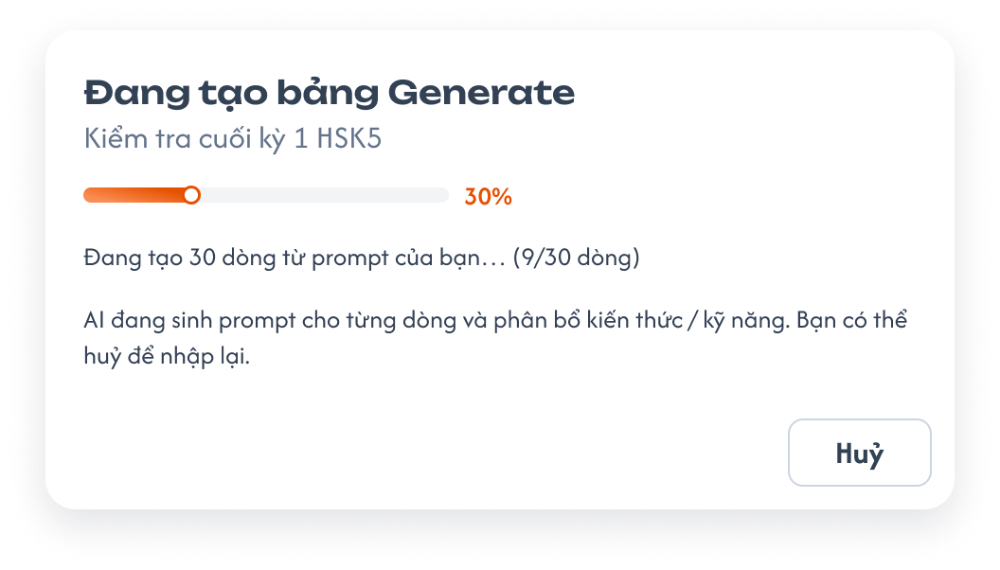
Đang tạo bảng Generate (Figma CD-KH-030344) — nhấn để xem ảnh gốc

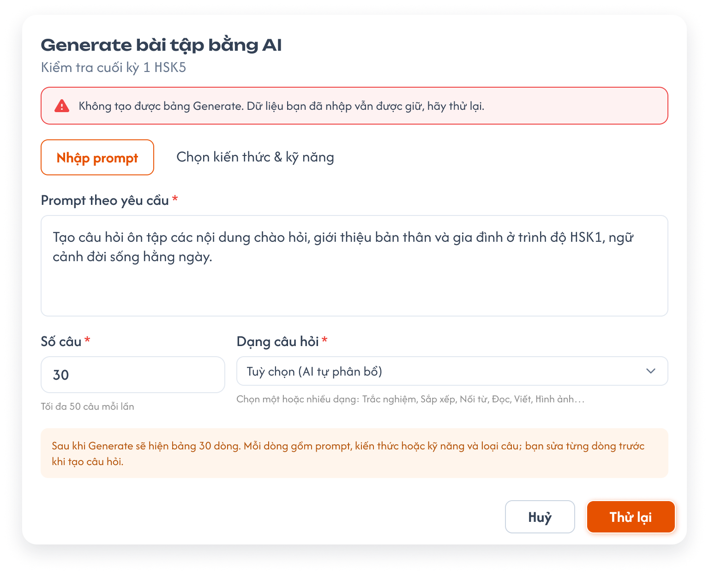
Không tạo được bảng Generate (Figma CD-KH-030346) — nhấn để xem ảnh gốc

Mô tả:
- Trong lúc AI sinh bảng, popup hiện tiến độ; lỗi thì quay lại popup nhập với dữ liệu đã nhập.
Giải thích thành phần:
| Thành phần | Yêu cầu |
|---|---|
Đang tạo bảng Generate |
Thanh tiến độ % và dòng Đang tạo N dòng từ prompt của bạn… (x/N dòng); nút Huỷ dừng tạo, quay lại popup nhập, giữ dữ liệu. |
| Lỗi | Popup nhập hiện thông báo đỏ Không tạo được bảng Generate. Dữ liệu bạn đã nhập vẫn được giữ, hãy thử lại.; nút Generate đổi thành Thử lại. |
Điểm cần lưu ý:
- Huỷ hoặc lỗi không thêm câu nào vào bộ câu hỏi.
Testcase — Đang tạo và lỗi
| Tên testcase | Priority | Loại test | Scenario | Role | Pre-condition | Given / When / Then | Expected Result |
|---|---|---|---|---|---|---|---|
| Case 32: Huỷ khi đang tạo | Medium | Flow 6 / REQ08 | CD | Đang tạo 9/30 dòng | Given bấm HuỷWhen popup xử lý Then quay lại popup nhập, giữ prompt và số câu |
- Không thêm câu | |
| Case 33: Lỗi tạo bảng | High | EX07 / REQ08 | CD | AI lỗi | Given bấm GenerateWhen lỗi xảy ra Then thông báo đỏ, nút Thử lại, dữ liệu giữ nguyên |
- |
Generate — Bảng N dòng
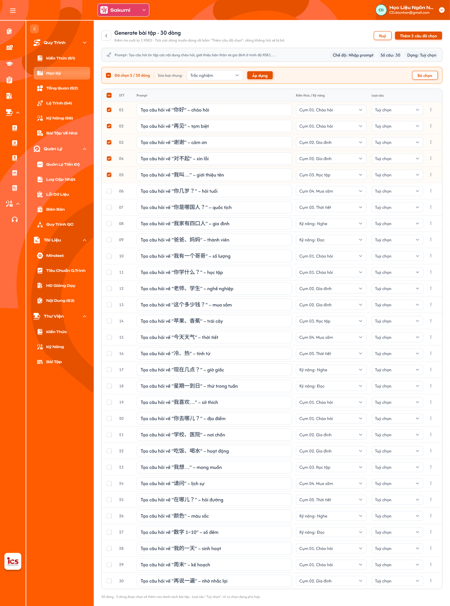
Bảng 30 dòng sau Generate (Figma CD-KH-030343) — nhấn để xem ảnh gốc

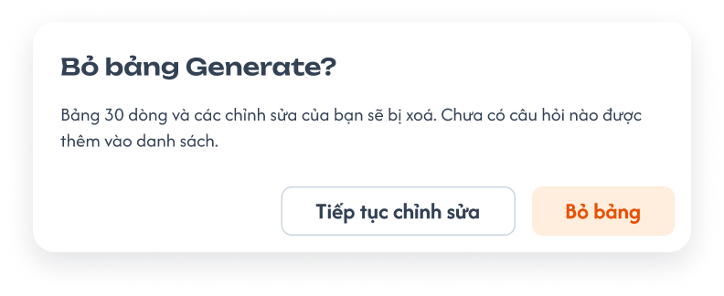
Popup Bỏ bảng Generate (Figma CD-KH-030345) — nhấn để xem ảnh gốc

Mô tả:
- Màn
Generate bài tập · N dòng: mỗi dòng là một câu sẽ tạo. CD sửa từng dòng, tick các dòng muốn dùng rồi bấmThêm N câu đã chọn.
Giải thích thành phần:
| Thành phần | Yêu cầu |
|---|---|
| Dòng tóm tắt | Prompt đã nhập (cắt …), Chế độ (Nhập prompt / Chọn kiến thức & kỹ năng), Số câu, Dạng. |
| Cột | ☐, STT, Prompt (sửa được), Kiến thức / Kỹ năng (dropdown cụm của khoá hoặc kỹ năng), Loại câu (dropdown Tuỳ chọn hoặc 8 loại), ⋮ (xoá dòng). |
| Thanh chọn | Đã chọn x / N dòng; Sửa loại chung (dropdown) + Áp dụng đổi Loại câu cho các dòng đã tick; Bỏ chọn. |
Thêm N câu đã chọn |
AI tạo câu hỏi cho các dòng đã tick, thêm vào cuối bộ câu hỏi; dòng không tick bị bỏ. Tuỳ chọn nghĩa là AI chọn loại câu phù hợp. |
Huỷ / nút < |
Mở popup Bỏ bảng Generate? (Bảng N dòng và các chỉnh sửa của bạn sẽ bị xoá. Chưa có câu hỏi nào được thêm vào danh sách., nút Tiếp tục chỉnh sửa / Bỏ bảng). |
Điểm cần lưu ý:
- Mỗi dòng phải có Prompt và Kiến thức / Kỹ năng trước khi thêm; dòng thiếu báo lỗi, chặn thêm.
- Chưa bấm
Thêm N câu đã chọnthì chưa có câu nào được tạo.
Testcase — Bảng N dòng
| Tên testcase | Priority | Loại test | Scenario | Role | Pre-condition | Given / When / Then | Expected Result |
|---|---|---|---|---|---|---|---|
| Case 34: Thêm các dòng đã chọn | High | Smoke | Flow 6 / REQ08 | CD | Bảng 30 dòng, tick 5 dòng | Given bấm Thêm 5 câu đã chọnWhen tạo xong Then 5 câu thêm vào cuối bộ, có tag AI |
- 25 dòng còn lại bị bỏ |
| Case 35: Sửa loại chung | Medium | REQ08 | CD | Tick 5 dòng | Given chọn Trắc nghiệm ở Sửa loại chungWhen bấm Áp dụngThen 5 dòng đổi Loại câu thành Trắc nghiệm |
- Dòng không tick giữ nguyên | |
| Case 36: Bỏ bảng | Medium | Flow 6 / REQ08 | CD | Đã sửa vài dòng | Given bấm HuỷWhen bấm Bỏ bảngThen quay về bộ câu hỏi, không thêm câu nào |
- Tiếp tục chỉnh sửa giữ bảng |
|
| Case 37: Dòng thiếu Kiến thức / Kỹ năng | Medium | EX06 / REQ08 | CD | Dòng 04 đã tick, bỏ trống Kiến thức / Kỹ năng | Given bấm Thêm N câu đã chọnWhen kiểm tra Then dòng 04 báo lỗi, không thêm |
- |
Generate — Sau khi tạo
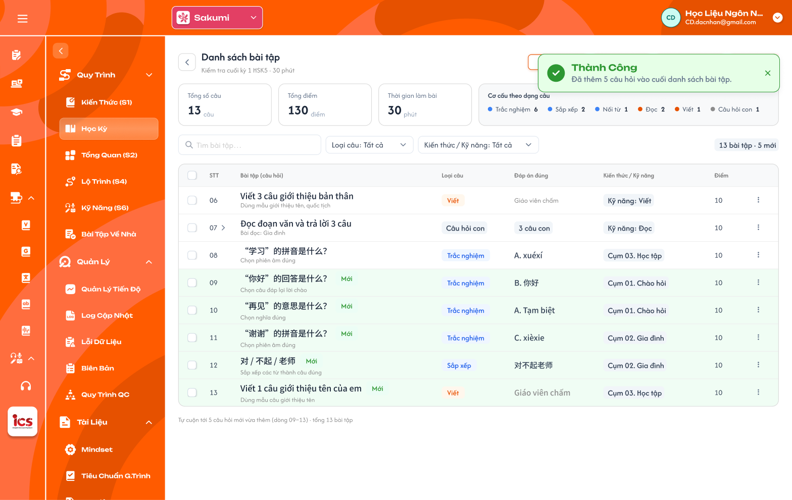
Bộ câu hỏi sau khi thêm 5 câu tạo bằng AI (Figma CD-KH-030347) — nhấn để xem ảnh gốc

Mô tả:
- Sau khi thêm, quay về bộ câu hỏi, tự cuộn tới các câu mới; Toast
Thành CôngĐã thêm N câu hỏi vào cuối danh sách bài tập.
Giải thích thành phần:
| Thành phần | Yêu cầu |
|---|---|
| Câu mới | Nền xanh nhạt và tag AI; số câu tiếp nối cuối bộ. |
| Badge tổng | N bài tập · M mới. |
| Thẻ tổng quan | Cập nhật Tổng số câu, Tổng điểm, Cơ cấu theo dạng câu. |
Điểm cần lưu ý:
- Câu tạo bằng AI không có trạng thái riêng, dùng như câu soạn tay. Tag
AImất khi CD sửa và lưu câu. - Khác Figma CD-KH-030347: tag câu mới ghi
Mới; requirement dùng tagAI.
Testcase — Sau khi tạo
| Tên testcase | Priority | Loại test | Scenario | Role | Pre-condition | Given / When / Then | Expected Result |
|---|---|---|---|---|---|---|---|
| Case 38: Cuộn tới câu mới | Medium | REQ08 | CD | Bộ có 8 câu, thêm 5 câu AI | Given thêm thành công When quay về bộ câu hỏi Then cuộn tới câu 09–13, có tag AI |
- Toast Đã thêm 5 câu hỏi vào cuối danh sách bài tập. |
Toast phản hồi CRUD

Toast Thành Công, Thông Báo, Cảnh Báo và Có Lỗi Xảy Ra — nhấn để xem ảnh gốc
Mô tả:
- Phản hồi sau khi thêm, sửa, xoá câu, import, tạo câu bằng AI.
Giải thích thành phần:
| Loại Toast | Tiêu đề cố định | Khi sử dụng |
|---|---|---|
| Thành công | Thành Công |
Đã thêm câu hỏi.; Đã cập nhật câu hỏi.; Đã xoá N câu hỏi.; Đã import N câu hỏi.; Đã thêm N câu hỏi vào cuối danh sách bài tập. |
| Cảnh báo | Cảnh Báo |
Câu hỏi thuộc khoá học đang Công khai không thể xoá.; File vượt quá dung lượng cho phép (25MB).; File import có dòng lỗi, chưa thêm câu nào. |
| Lỗi | Có Lỗi Xảy Ra |
Lưu, xoá, import, export, tạo câu bằng AI thất bại do backend / network. |
Điểm cần lưu ý:
- Mỗi thao tác một Toast;
Huỷ, tìm kiếm, lọc, chọn bài, soát lỗi không có Toast CRUD.
Testcase — Toast phản hồi CRUD
| Tên testcase | Priority | Loại test | Scenario | Role | Pre-condition | Given / When / Then | Expected Result |
|---|---|---|---|---|---|---|---|
| Toast Case 1: Thành công | High | Ràng buộc Toast CRUD | CD | Dữ liệu hợp lệ | Given lưu, xoá, import hoặc thêm câu AI When backend thành công Then Toast Thành Công đúng nội dung |
- Một Toast | |
| Toast Case 2: Lỗi | High | Ràng buộc Toast CRUD | CD | Backend / network lỗi | Given lưu hoặc import When thất bại Then Toast Có Lỗi Xảy Ra |
- Dữ liệu không đổi một phần |
2. Yêu cầu
2.1. Flow chính
Flow 1 / REQ01 / REQ02 / REQ03: Chọn kỳ, bài và xem bộ câu hỏi
CD mở khoá học → Bài Tập Về Nhà
→ Chọn tab BTVN hoặc Kiểm tra → chọn kỳ → danh sách lesson / bài kiểm tra của kỳ
→ Chọn bài → vùng trái tải tiêu đề, thẻ tổng quan, bảng câu hỏi (hoặc trạng thái rỗng)
Flow 2 / REQ04 / REQ05: Thêm câu hỏi soạn tay
CD bấm "+ Thêm câu hỏi" (hoặc Enter ở ô nhập nhanh)
→ Popup Chọn loại câu → chọn 1 trong 8 loại → Tiếp tục
→ Popup Soạn câu hỏi: Số câu, Kiến thức / Kỹ năng, Điểm, Nội dung, đáp án theo loại…
→ Lưu câu hỏi: thiếu field bắt buộc → báo lỗi; đủ → lưu, đóng popup, Toast "Đã thêm câu hỏi."
Flow 3 / REQ05: Sửa câu hỏi
CD bấm ⋮ → Sửa → popup Soạn câu hỏi (loại câu khoá)
→ Lưu: cập nhật câu; câu có tag AI thì mất tag; Toast "Đã cập nhật câu hỏi."
Flow 4 / REQ03: Xoá câu hỏi
CD bấm ⋮ → Xoá (hoặc chọn nhiều → Xoá)
→ Backend kiểm tra khoá học không ở trạng thái Công khai
→ Popup xác nhận → Xoá: xoá mềm, các câu sau dồn số, Toast "Đã xoá N câu hỏi."
Flow 5 / REQ06: Export và Import Excel
Export Excel → tải file .xlsx toàn bộ câu của bài, cột như bảng UI
Import Excel → chọn file .xlsx → kiểm tra từng dòng
→ Có dòng lỗi: chặn cả file, báo lỗi theo số dòng
→ Hợp lệ: thêm mọi dòng vào cuối bộ (không bỏ câu trùng), Toast "Đã import N câu hỏi."
Flow 6 / REQ08: Tạo câu hỏi bằng AI
CD bấm "Tạo câu hỏi bằng AI"
→ Tab Nhập prompt (prompt) hoặc Chọn kiến thức & kỹ năng (≥ 1 cụm, kỹ năng tuỳ chọn) + Số câu + Dạng câu hỏi
→ Generate → Đang tạo bảng (Huỷ: quay lại, giữ dữ liệu; lỗi: báo đỏ, Thử lại)
→ Bảng N dòng: sửa Prompt / Kiến thức / Kỹ năng / Loại câu, tick dòng
→ Thêm N câu đã chọn → câu thêm vào cuối bộ có tag AI, Toast thành công
→ Huỷ → popup Bỏ bảng → Bỏ bảng: không thêm câu nào
Flow 7 / REQ07: Soát lỗi bằng AI
CD bấm "Soát lỗi bằng AI" → AI rà toàn bộ câu của bài
→ Trả danh sách vấn đề (trùng, thiếu đáp án, sai lệch…) theo số câu
→ CD tự sửa / xoá câu; AI không tự thay đổi dữ liệu
2.2. Ngoại lệ
- EX01: Lưu câu thiếu field bắt buộc (Số câu, Loại câu, Kiến thức / Kỹ năng, Điểm, Nội dung câu hỏi) → báo lỗi dưới field, không lưu.
- EX02: File hình ảnh / âm thanh lớn hơn 25MB → không tải lên; Toast
Cảnh BáoFile vượt quá dung lượng cho phép (25MB). - EX03: File import có dòng thiếu field bắt buộc, sai Loại câu, sai Kiến thức / Kỹ năng, không phải
.xlsxhoặc sai cột tiêu đề → chặn cả file, báo lỗi theo dòng; không thêm câu nào. - EX04: Lưu, import, export thất bại do backend / network → Toast
Có Lỗi Xảy Ra; dữ liệu không thay đổi một phần. - EX05: Xoá câu thuộc khoá học đang
Công khai(giao diện hoặc request trực tiếp) → backend từ chối; ToastCảnh Báo. - EX06: Generate thiếu field bắt buộc (prompt, cụm kiến thức, số câu, dạng câu hỏi) hoặc dòng bảng thiếu Prompt / Kiến thức / Kỹ năng → khoá nút hoặc báo lỗi dòng, không tạo.
- EX07: AI không tạo được bảng hoặc câu hỏi → báo lỗi, giữ dữ liệu đã nhập, cho
Thử lại; không thêm câu nào.
2.3. Yêu cầu khác
- REQ01 – Chọn bài theo kỳ: Tab BTVN: kỳ → lesson của kỳ; tab Kiểm tra: kỳ → bài kiểm tra của kỳ; badge số câu từng bài; tìm theo tên bài; mặc định kỳ đầu, bài đầu.
- REQ02 – Thẻ tổng quan: Tổng số câu (câu cha), Tổng điểm, Thời gian làm bài (chỉ Kiểm tra), Cơ cấu theo dạng câu; tag
N câu hỏi,N thiếu đáp án; cập nhật ngay sau mọi thay đổi. - REQ03 – Bảng câu hỏi: Cột STT, Câu hỏi, Loại câu, Đáp án đúng, Kiến thức / Kỹ năng, Điểm; lọc Loại câu, Kiến thức / Kỹ năng và tìm kiếm (không có lọc Trạng thái); câu hỏi con mở / thu; 8 câu/trang; xoá mềm, không xoá câu thuộc khoá
Công khai. - REQ04 – Loại câu: 8 loại Trắc nghiệm, Sắp xếp, Nối từ, Nói (App chấm); Đọc, Viết, Hình ảnh (GV chấm); Câu hỏi con (theo từng câu con).
- REQ05 – Soạn câu hỏi: Bắt buộc Số câu, Loại câu (khoá sau khi chọn), Kiến thức hoặc Kỹ năng, Điểm, Nội dung câu hỏi; đáp án theo loại câu; file tối đa 25MB; Số câu trùng thì chèn và dồn các câu sau.
- REQ06 – Import / Export Excel: Cột file giống bảng UI; export toàn bộ câu của bài; import thêm vào cuối, kiểm tra từng dòng, có dòng lỗi thì chặn cả file; không tự dò câu trùng.
- REQ07 – Soát lỗi bằng AI: Rà toàn bộ câu của bài, phát hiện câu trùng và các lỗi khác, chỉ báo, không tự sửa.
- REQ08 – Generate bằng AI: Hai chế độ Nhập prompt / Chọn kiến thức & kỹ năng; Số câu không giới hạn; sinh bảng N dòng để sửa và chọn; chỉ dòng được tick mới tạo câu, thêm vào cuối bộ với tag
AI; huỷ / lỗi không thêm câu. - REQ09 – Không trạng thái và kỳ Vô hiệu: BTVN, bộ câu hỏi và câu hỏi không có trạng thái riêng (trạng thái hiển thị ở Thư viện theo khoá học). Kỳ
Vô hiệu: BTVN đã tạo trong lớp từ kỳ đó trước khi vô hiệu vẫn dùng bình thường.
2.4. Ràng buộc
Quyền
| Role | Xem bộ câu hỏi | Thêm / sửa câu | Xoá câu (khoá chưa Công khai) | Import / Export Excel | Generate / Soát lỗi bằng AI |
|---|---|---|---|---|---|
| CD | ✅ | ✅ | ✅ | ✅ | ✅ |
| Các role khác | ❌ | ❌ | ❌ | ❌ | ❌ |
Phạm vi dữ liệu
- Dữ liệu theo khoá học và trung tâm CD đang chọn; Kiến thức / Kỹ năng chỉ chọn trong cụm của chính khoá học và 4 kỹ năng.
- Mọi request thêm, sửa, xoá, import được backend kiểm tra quyền, khoá học, bài và field bắt buộc; không dựa vào việc ẩn nút.
3. Cần xác nhận
- Giao diện chi tiết còn thiếu: phần đáp án của Sắp xếp, Nối từ, Nói, Đọc / Viết / Hình ảnh (bài mẫu), Câu hỏi con; popup kết quả Import; kết quả Soát lỗi bằng AI; Preview mobile.